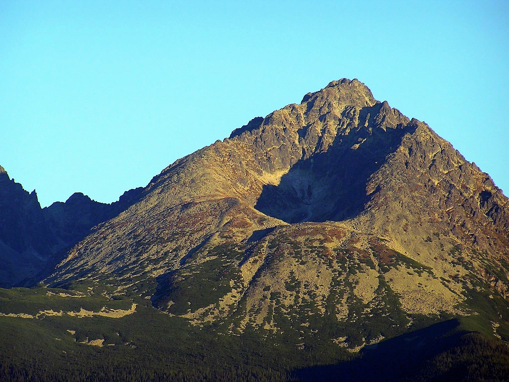
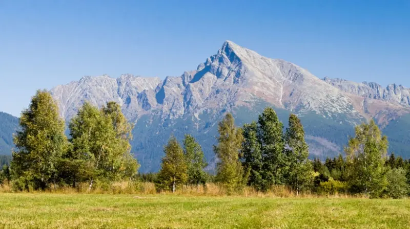
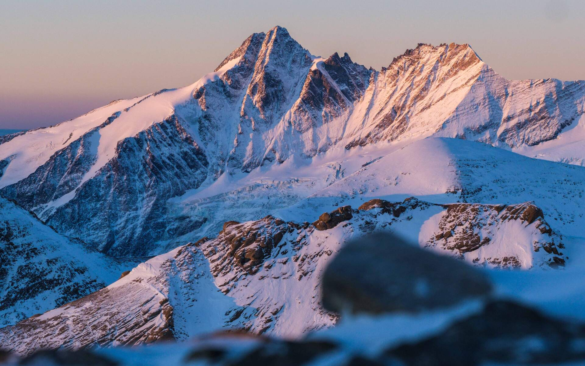
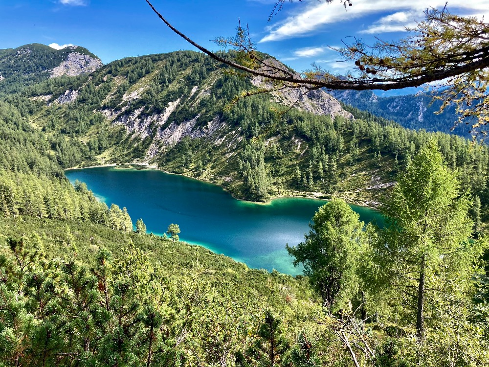

Moje další cíle
Místa, která bych chtěl v budoucnu poznat.

Gerlachovský štít
Nejvyšší hora Vysokých Tater i celého Slovenska. Je to jeden z mých velkých horských cílů, na který se lze vydat pouze s horským vůdcem.
Lokalita: Slovensko · Vysoké Tatry

Kriváň
Ikonická hora Slovenska, která má nezaměnitelné místo v panoramatu Tater. Rád bych vystoupal na její vrchol a užil si výhledy z jednoho z nejznámějších slovenských kopců.
Lokalita: Slovensko · Vysoké Tatry

Grossglockner
Nejvyšší hora Rakouska a jeden z výrazných vrcholů Alp. Je to další velká horská výzva, kterou bych si chtěl jednou splnit.
Lokalita: Rakousko · Vysoké Taury

Tauplitzalm – okruh šesti horských jezer
Krásný jednodenní trek v rakouských Alpách, který vede kolem šesti horských jezer. Lákají mě především zdejší výhledy, horská příroda a samotná jezera.
Lokalita: Rakousko · Štýrsko